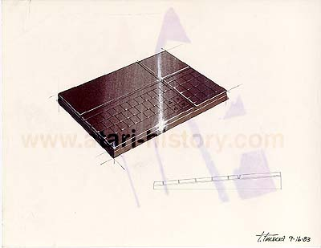
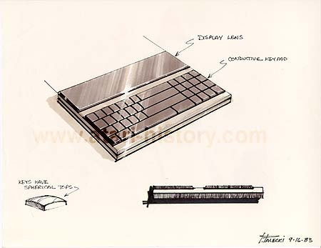
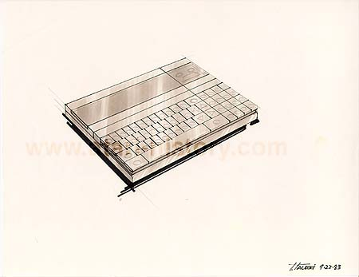

Inspired from Alan Kay's idea of a "Databook" (Alan Kay formerly of Xerox PARC, was Atari's chief scientist and headed up many advanced R&D projects for Atari until leaving for Apple Computer to assist in the development of the Apple Macintosh), a computer that could be carried around with you that would be the size of a notebook, the Atari "Databook" styled laptop meets those specifications exactly. Giving the user a full keyboard, plus numeric keypad, LCD screen and in some models, even a microcassette datastorage drive. Different styles and keyboard types were examined.

These concepts truly show what a laptop could and should be like in form and functionality. Several years later, one of the first laptops to be introduced with a strikingly similar look to the Atari "Databook" styled laptop was Tandy's Radio Shack Model 100 computer.
